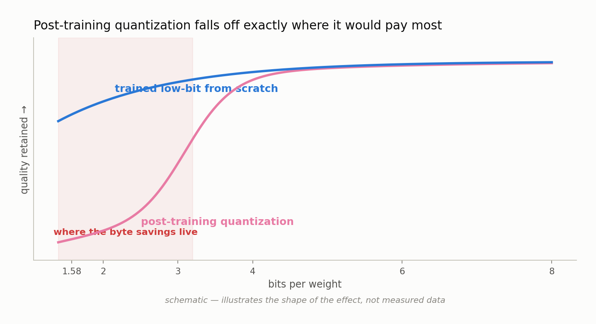
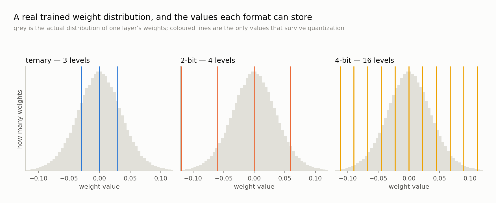

Chapter 6 — Quantization (the standard fix, and where it breaks)#
This chapter explains what quantization is, how the industry's dominant approach — quantizing after training is over — actually works, and why it is so popular. Then it takes the failure mode apart carefully: why quality falls off a cliff below about 4 bits, why a handful of outlier values are the specific culprit, and what per-group scaling and activation quantization do about it. It closes with the three-part argument at the center of LOGOS, stated fairly enough that a defender of the standard approach would recognize their own position in it.
What quantization is#
Quantization means representing a model's numbers with fewer bits than they were computed in — usually the weights, often also the activations, the intermediate values that flow through the network as it processes an input.
Chapter 5 supplied the motivation in one line. A billion-parameter model is 2 GB at bf16, 500 MB at 4 bits, and about 200 MB at ternary. Nothing about the model's design changes across those numbers — same architecture, same parameter count, same trained values give or take rounding. Only the description length changes. When memory is the binding constraint, a 4× or 10× reduction costing a few percent of quality is not a marginal optimization; it decides whether the model runs on the hardware you have.
The mechanism is the one from Chapter 5: replace each real-valued weight with a small integer code plus a shared scale factor, and reconstruct an approximation when you need it. The interesting question is not whether to do this. It is when — after training, or during it.
Post-training quantization: the standard answer#
Post-training quantization (PTQ) dominates practice. You train the model normally, in 16-bit, exactly as you always would; then, once training is finished, you convert the weights to a lower precision and ship that.
The conversion is mechanically simple. For each weight tensor — or, more commonly, each small group of weights within a tensor — you look at the values, pick a scale factor so the integer grid spans their range, and round every weight to the nearest grid point. Fancier variants exist: some use a small calibration set, a few hundred sample inputs run through the model, to choose scales that minimize error in the layer's outputs rather than its weights; some nudge weights to compensate for rounding. The essential character is unchanged. Training produced a set of numbers; PTQ finds the best low-bit approximation to them.
Its popularity is entirely earned:
- It is nearly free. No retraining, no gradients, no GPU-weeks. Converting a large model takes minutes to hours on one machine.
- It needs nothing from the model's author. You can quantize any released checkpoint without access to its training data or recipe.
- The tooling is everywhere and it is good. GGUF and llama.cpp for local inference, bitsandbytes for PyTorch, and a dozen library quantizers besides — already written, already tested on hundreds of models.
If you have ever run a large language model on your own laptop, you ran a post-training-quantized model, and it very likely worked well. That experience is real evidence and should not be argued away.
Where it breaks#
PTQ's quality holds up in a pattern that is consistent enough to state as a rule of thumb: essentially lossless at 8 bits, usually fine at 4 bits, and degrading sharply below 4.
That sharpness is the problem, because it lands exactly where the savings live. Sixteen bits to 8 halves the footprint; 8 to 4 halves it again. Everything past that — 3 bits, 2 bits, ternary — is where the remaining factor of two-and-a-half hides, and it is precisely the region PTQ cannot enter without losing a great deal.

Why the cliff? The intuition is worth getting right, because everything else in this book follows from it.
Training does not produce arbitrary numbers. It produces weights whose precise values encode what the model learned — the relative sizes of nearby weights, the small differences that make one feature fire and another stay quiet. That information lives at a resolution the coarse grid cannot express: at 4 bits you have 16 tick marks for a distribution training laid out across thousands of meaningfully distinct levels, and at 2 bits you have four.
And here is the decisive part: nothing gets a chance to compensate. Training is over. Every weight is rounded independently, errors accumulate through the layers, and no remaining process can notice the damage and adjust the other weights to offset it. The model was optimized on the assumption that its weights were what they were; you then changed them, and told nobody.
The figure below shows this concretely: a real weight distribution overlaid with the discrete values each format can store.

Notice how tightly the mass clusters near zero, with thin tails running out to much larger magnitudes. That shape creates the next problem.
Outliers: the specific villain#
If weights were spread evenly across their range, a coarse grid would hurt much less — the tick marks would land where the weights are. They are not spread evenly. A trained distribution is sharply peaked around zero with long tails, and a small number of values sit far out in those tails. These are the outliers.
Outliers wreck a single shared scale. The scale must be large enough to represent the biggest value in the block, since anything larger gets clipped to the maximum code and loses its magnitude entirely. But if the biggest value is twenty times the typical one, setting the scale by that outlier makes every tick mark twenty times coarser than the bulk of the distribution needs. Nearly all the weights end up crammed onto the two or three ticks nearest zero, while most of the grid sits empty, reserved for extremes that occur a handful of times.
You have spent your bits on rare events and starved the common case.
It is worse for activations, and worse still because in transformers the outliers are not random: certain channels — specific coordinates of the hidden vector, the same ones for every input — carry systematically huge magnitudes, and a single tensor-wide scale is hostage to them.
The standard mitigation is per-group scaling: one scale for each small contiguous group of weights instead of one for the whole tensor. LOGOS uses groups of 128, so an outlier distorts the grid only for the 127 weights sharing its group, not for millions elsewhere. The cost is the storage from Chapter 5 — one fp32 scale per group, 4.25 effective bits per weight instead of 4.00. Everyone makes that trade. LOGOS handles ternary differently, following BitNet b1.58: a single per-tensor scale, the mean absolute value of the weights, with each weight rounded to −1, 0, or +1 against it.
Activations are harder than weights#
Weight quantization and activation quantization sound symmetric. They are not.
Weights are fixed. Once training ends every weight has a known value; you can inspect the whole distribution at leisure, choose scales offline, and pay that cost once. Activations are computed fresh for every input, and their range depends on what the model is currently reading — so you either guess the range in advance from calibration data, and are wrong whenever an input is unusual, or compute the scale on the fly, which costs time in the hot path of inference.
The notation for describing a scheme is W×A8: k-bit weights with 8-bit activations. A "W4A8" model stores weights at 4 bits and computes with 8-bit activations. LOGOS uses W×A8 on every low-bit arm — ternary, 2-bit, 3-bit and 4-bit all run 8-bit activations, computed as a per-token absolute-maximum scale, meaning the scale is derived from each token's own activation vector as it arrives rather than fixed ahead of time. The bf16 control arm has no quantization anywhere.
Eight bits for activations is a deliberate, common choice: enough that activation quantization is not the dominant error source, which keeps the experiment clean. When the ternary arm and the 4-bit arm differ, the difference is about weights, because the activation treatment is identical across them.
The three-part argument#
Here is the case at the center of this project, stated as precisely as it can be.
One: PTQ cliffs below 4 bits, exactly where the savings live. The regime that delivers a 4× to 10× footprint reduction — 3 bits, 2 bits, ternary — is the one it cannot reach without unacceptable degradation. It works well right up to the point where you actually need it.
Two: it leaves the training economics untouched. PTQ compresses an artifact. The full-precision model was still trained at full-precision cost, on full-precision memory, before any compression happened. If memory is the scarce resource, PTQ conserves none of it during the phase that consumes the most. A patch applied after training cannot change the economics of training.
Three: it answers the wrong question. PTQ asks how little damage can we do to this 16-bit model while squeezing it into 4 bits? That is damage minimization, and it takes the 16-bit model's design — parameter count, width, depth — as fixed. The question a byte budget actually poses is different: what is the best model that fits in this many bytes in the first place? The answers differ, because the second lets you spend the budget on, for instance, a substantially larger model at fewer bits per weight. PTQ cannot even represent that option: by the time it runs, N was decided long ago.
In fairness to PTQ#
Two things must be said clearly, or the argument above becomes a straw man.
A 4-bit PTQ model is genuinely strong. It gives you most of a full-precision model's quality at a quarter of its weight bytes, for a few minutes of conversion, with mature tooling, on any checkpoint you can download. No rhetorical move makes that unimpressive. It is a very good deal, and it is why the technique won.
LOGOS treats it as the competitor to beat, not as a foil. The project's capstone phase trains the model its fitted law prescribes at a fixed body-byte budget and puts it against baselines at equal bytes — including a 4-bit post-training quantization of a larger bf16 model, alongside the best bf16 configuration that fits and a from-scratch 4-bit trained arm. If native low-bit training does not beat those at the same footprint, the thesis is wrong, and the experiment is arranged so that outcome is visible rather than avoidable.
There is also a case for PTQ this project does not dispute: when you already have a trained 16-bit model and need it smaller today, PTQ is the right tool, and nothing in native low-bit training helps you compress someone else's checkpoint. The argument here is about which question the field should organize around when bytes are the binding constraint.
What comes next#
If quantizing after training runs into a wall below 4 bits because nothing can compensate for the rounding, the obvious response is to move the rounding inside training — to make the model aware, from step one, that its weights will be ternary or 2-bit, so that the remaining weights can adapt around every rounding decision as they are made.
That is the right idea, and it has one immediate obstacle. Training works by gradient descent, which requires every operation in the network to be differentiable — to have a well-defined slope you can propagate error through. Rounding is not. It is a staircase: flat almost everywhere with a slope of zero, punctuated by jumps where the slope is undefined. Run gradients backward through it as written and every one becomes zero. Nothing learns.
Chapter 7 shows the trick that gets around this, and what it costs.
What to remember#
Quantization means describing a model's numbers with fewer bits, and post-training quantization does it the cheapest possible way — train in 16-bit, then round the finished weights onto a coarse integer grid read against a shared scale. It works well down to about 4 bits, and the tooling around it is mature enough that most people running models locally are already relying on it. Below 4 bits it degrades sharply, because trained weights encode information at a resolution the grid cannot express and, with training over, nothing remains to compensate for the error; outlier values make this worse by forcing the scale wide enough to cover rare extremes, which per-group scaling at 128 weights per group mitigates but does not solve. Activations are harder than weights because their range changes with every input, which is why LOGOS holds them at 8 bits — the W×A8 scheme — on every low-bit arm, keeping weight precision the only thing that varies. The argument against PTQ as a strategy is that it cliffs where the savings are, spends the full training bill anyway, and optimizes damage to a 16-bit design rather than searching for the best model that fits the budget — but a 4-bit PTQ model remains a strong, honest baseline, and this project treats it as the thing to beat.